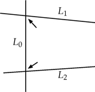
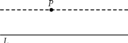
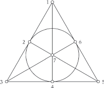
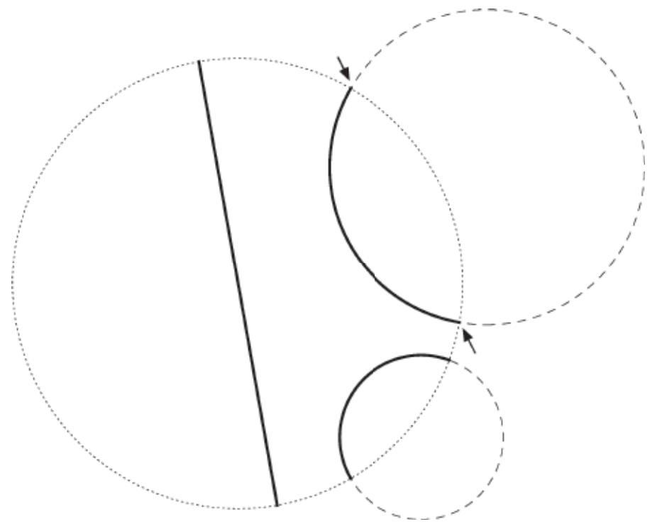
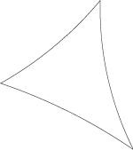
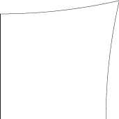
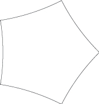
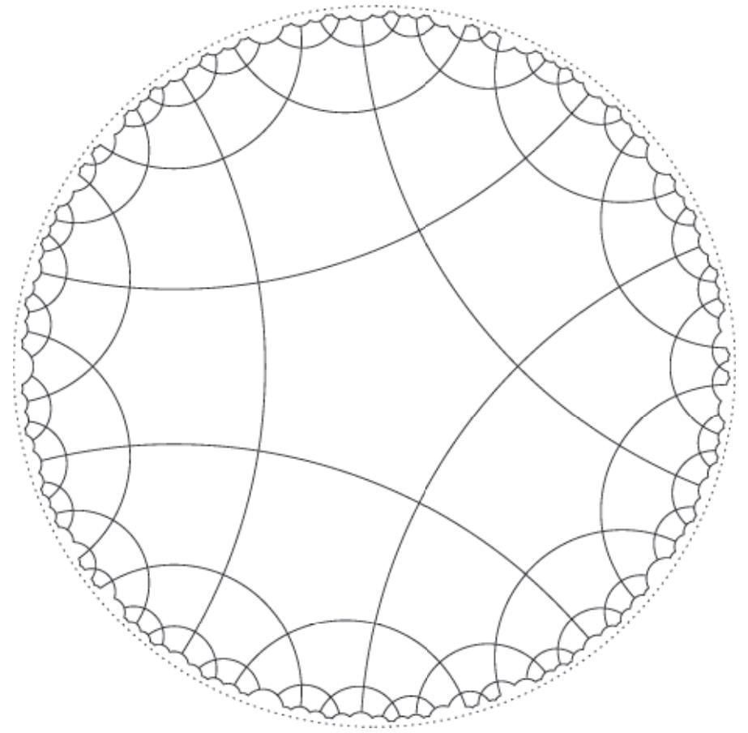
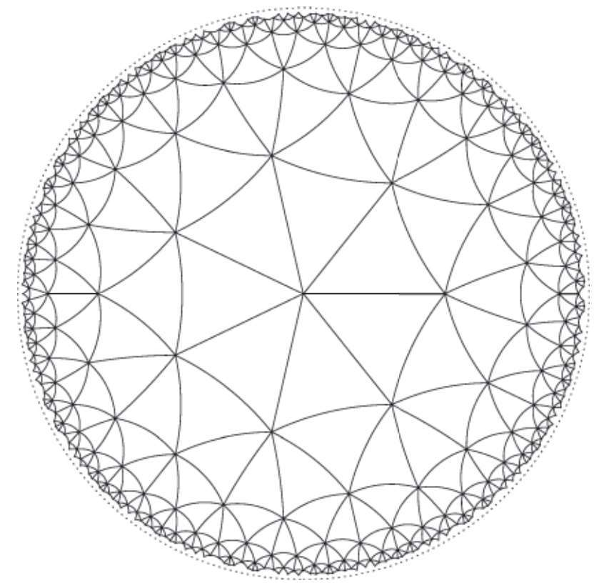
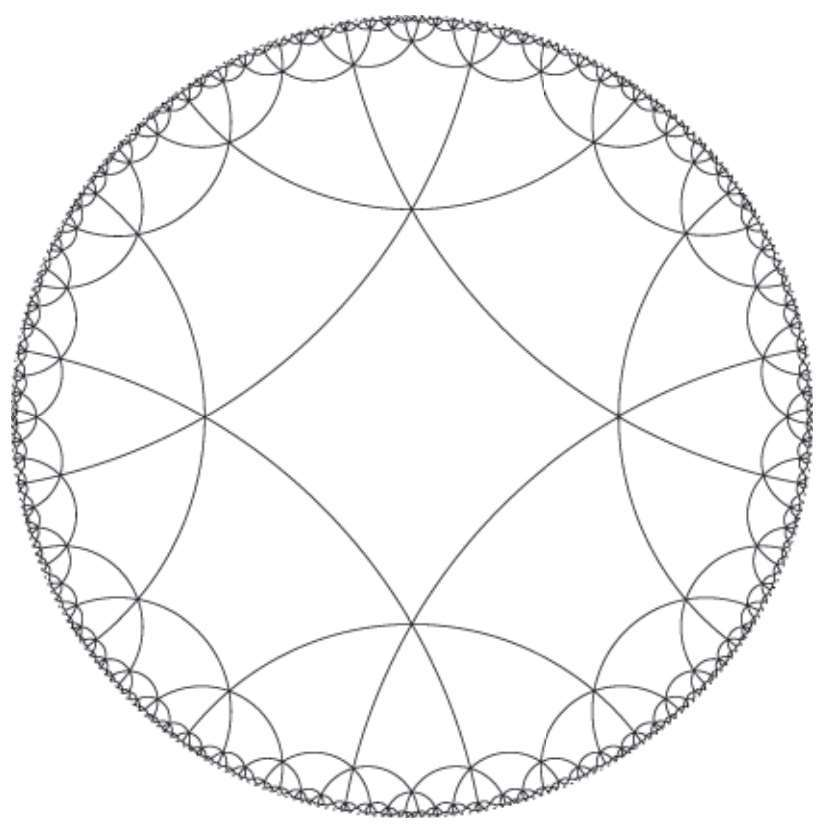

数学家是定义的狂热分子。我们要求每个概念都要以清晰明确的定义来说明。要做到这一点，每个数学思想都应从简单的思想中精确地建立起来。三角形是从线段构建的，有理数被描述为整数的比率。
数学定义的高塔必须奠基于某处。对于希腊人来说，这个基础是几何学。
现代数学家把数学大厦置于集合——无序的事物总和的概念上。
欧几里得并没有试图定义点、线和面的基本概念。相反，他采取了不同的方法：他假设了这些概念所具有的某些基本属性。这样的假设被称为公设（postulates）或公理（axioms）。
为了启动几何这门学科，欧几里得提出了五个基本的公设。大致翻译如下：
1. 给定任意两个点，有唯一的直线经过它们。
2. 任意线段能无限延长成一条直线。
3. 给定任意一个点和一个长度，有唯一的圆，以这个点为圆心，这个长度为半径。
4. 所有直角都全等。
5. 若两条直线都与第三条直线相交，并且在同一侧的内角之和小于两个直角和，则这两条直线必定在这一侧相交，如下所示：

欧几里得给出了直角的定义：当一条直线和另一条直线交成的四个邻角彼此相等时，这四个角均是直角。
前四个公设很简单，不难理解。然而，第五个是相当混乱的。让我们来看看它到底在说什么。
设直线为L0，与L0相交的两条直线为L1和L2。直线L0和L1形成夹角，直线L0和L2也是如此。如上图所示。
公设要求我们考虑两个内角和（在L0的同一侧）小于直角时的情况。图中的箭头指向欧几里得所思考的角。它们都在L0的同一侧，且都是内角，因为它们内向面对。
我们现在来到这个公设的关键。如果这两个角的和小于直角，那么直线L1和L2必定相交。上图没有显示这种相交，但不难想象，当它们延长后最终必定相交。
有了这五个公设，欧几里得就证明出了一大堆有趣的定理。
欧几里得的第五公设是丑陋的。它的丑陋与前四个简单的优雅形成对比。数学既是一个实用的解题工具，也是一门审美艺术，所以改善欧几里得的地基是极具吸引力的。
在一个平面中不相交的直线被称为平行线，所以这个公设也被称为平行公设。
一种方法是用更简单的公理代替欧几里德的第五公设：
5.给定一条直线，通过直线之外的任意一个点，有唯一的一条直线和已知直线平行。
我们用平行公设来证明三角形的内角之和为180°。参考[1]。
欧几里得的第五公设的替代版被称为平行公设（Parallel Postulate）。让我们看看它说什么。
假设有一条直线L和一个不在L上的点P点。见图。公理5'断言，有一条过P的直线（虚线所示）与L平行，而且这样的直线只有一条（因此在该公理的陈述中使用了唯一这个词）。

数学家们已经证明，欧几里得的第五公设和并行公理在逻辑上是等价的。这意味着我们可以证明使用前四个公设和5证明的定理与我们使用前四个公设和5' 证明的定理完全相同。
虽然5' 的陈述比5简单一点，但它还是不如前四个利索和优雅。我们可以改善它吗？换句话说，是否可以证明平行公设是一个定理，而不是把它作为一个基本假设？
给定一条直线L和一个不在L上的P点，那么平行公设提出了两个主张：首先，有一条过P点的直线与L平行（意思是，不与L相交）；其次，过P点不与L相交的直线不会多于一条。
解决这个问题的一个方法是反证法——这是我们在第1章中介绍的方法。下面是逻辑的原理。
为了证明过P点存在一条直线与L平行，我们假设没有过P点的直线与L平行。
为了证明这条直线的唯一性，我们假设有两条（或更多）过P点的直线与L平行。
无论哪种情况，我们都要进行逻辑推演，直到出现矛盾。这个矛盾意味着（A）或（B）——我们假设为真——当中的任意一个是错误的：
●如果不存在与L平行的直线的假设会导致矛盾，则一定存在与L平行的直线。
●如果平行线有两条（或更多）的假设会导致矛盾，则平行线最多只能有一条。
这是数学家们尝试的方法——并且失败了。可以肯定的是，事情变得很吊诡（如内角之和不是180°的三角形），却没有从中发现矛盾。
没关系。数学家们从没有想象过自己能够所向披靡。他们一直殚精竭虑并将未竟的事业交给下一代，期待青出于蓝而胜于蓝。
按照“平行公设”的探寻思路，更好的想法确实出现了，却与前人的传统思路背道而驰。
大多数数学家希望“平行公理”的不可证会导致矛盾。19世纪的俄国数学家尼古拉·罗巴切夫斯基（Nikolai Lobachevsky）却认为，（B）并不会将我们引向逻辑上的矛盾，而是发现一个崭新的几何世界，为了纪念他，这个几何公理系统通常被称作罗巴切夫斯基几何。
直线是一种点的集合，就像圆或三角形那样。只有某些特定的点的集合才被认为是线。
直觉上，我们明白什么是一条线：它很细（没有宽度），笔直，并且在两个相反的方向上一直延续下去。但是这个描述不是一个完整的数学定义。笔直是什么意思？这是一个很难明确的概念。
因此，正如我们所提到的，欧几里得采取了不同的方法，这是我们今天思考点和线的方法。我们有称作点的东西和某些我们称之为线的点的总和（集合），如果它们都满足欧几里得的公理，那么我们得到一个系统，我们将其称为欧几里得几何（Euclidean geometry）。
如果我们改变欧几里得关于点和线的基本性质的假设，那么我们会得到不同类型的几何。我们来看一个简单的例子。我们保留欧几里得的第一个公理：
1. 任意两条直线有唯一公共点。
我们引入一个颠倒点和线角色的设定。
1'.任意两条直线可以通过一个点相连。
注意假设1'意味着没有平行线，它断言每一对线都是相交的。这种情况在欧几里得几何中不存在。
让我们看看适当选择的“点”和“直线”可以满足条件1和1' 。对于这个例子，我们正好有七个点，我们将它们简单命名为1，2，3，4，5，6和7。
{1，2，3} {1，5，6} {1，4，7} {2，5，7}
{2，4，6} {3，4，5} {3，6，7}
这个七点七线的系统被称为法诺平面（Fano Plane）。
这七条“直线”和欧几里得的直线完全不一样。每一条只有三个点！
仔细一点，我们可以检验出这个七点七线的系统满足假设1和1' 。
●检验假设1。选择任意两点：假设2和5。这两点都位于直线{2，5，7}，并且没有其他的直线包含它们。
这是定义欧几里得的点和直线的一种方法。一个点是一对实数（x，y）。直线是一组点（x，y），其满足ax+by+c=0的形式，其中a和b不都是零。通过这些定义（以及适当的圆和角的定义），可以证明其满足欧几里得公理。
将点表示为成对的数，并将直线对作为方程的解，构成了以数学家和哲学家勒内·笛卡尔命名的笛卡尔平面。
●如果你检查所有可能的成对的数字，会发现总是有一条直线——且只有一条——包含这两个数字。
●检验假设1' 。选择两条直线，任意两条：比如{1，4，7}和{3，4，5}。这两条直线都包含点3，这是它们唯一的共同点。
●如果你检查所有可能的成对的直线，你会发现它们总是包含一个共同的点，且只有一个共同的点。
不用图像谈论几何是很奇怪的。幸运的是，如图所示，有一个很好的方式来表示这个系统。七个点用小圆点表示，七条线用线段（对于大多数线）和一个圆（对于线{2，4，6}）来表示。

关键在于（哈！）我们收集了大量被将称之为点的东西，然后对某些点的总和（集合）进行指定，称之为直线。如果这些所谓的点和直线能满足具有几何意义的条件，那么点和直线的名称是合理的，即使它们与欧几里得观念中的点和直线毫无相似之处。
我们在点和直线这两个词的使用上已经变得相当宽容。只要满足适当的假设，我们可以确定任意的点，并将这些点的组合称作直线。什么是“适当”的？对欧几里得而言，“适当”就是我们在本章开头介绍的那五个假设。
在这种情况下，我们提出了另一个“点”和“直线”的集合，来创建双曲几何（yperbolic geometry）。它的所有点都位于一个固定的圆内。我们将这个圆内的整个区域称为双曲平面（hyperbolic plane）。
这种双曲平面的模型被称为庞加莱圆盘模型，以纪念19世纪的法国数学家亨利·庞加莱（HenriPoincaré）。
双曲平面的线一定是圆弧。这是令人困惑的：一条弧线怎么能成为一条直线呢？弧线是弯曲的，直线是直的！为了方便理解，我们使用双曲直线（hyperbolic line）的表述来区分它与那位笔直的表亲。
以下是双曲平面中的双曲线。
●绘制一个与双曲平面相交成直角的圆（参见下图中的箭头）。位于双曲平面内部的部分是双曲直线。
●过双曲平面的原点绘制一条直线。位于双曲平面内的部分也是一条双曲直线。
下面的图显示了在双曲平面中绘制的三条双曲直线。

双曲平面中的三条线
双曲平面是由细小的圆点组成的圆的内部。在上页图中，我们看到了两条双曲直线，它们是垂直于边线的圆弧和一条构成直径的双曲直线。注意这些弧线和直径的端点不是相应双曲直线的一部分。（这些圆的粗糙的虚线部分不是双曲直线的一部分，它们只是为了显示圆弧是如何以直角与细小圆点组成的圆相交的。）
对于左侧的图形，我们给出了三条线。其中两条互相交叉，第三条与它们平行！欧几里得平面上不可能存在这样的线。
双曲平面上的情况是截然不同的。关于欧几里得平面的许多几何“事实”在双曲平面中并不成立。

首先，三角形是完全不同的。在欧几里得平面上，三角形的内角之和正好是180°。在双曲平面中，三角形的内角之和总是小于180°（在第13章中，我们证明了三角形内角之和必定等于180°，但是那个证明使用了平行公理作为关键步骤）。
技术细节：重新调整欧几里得平面的比例并没有从根本上改变它。然而，双曲线平面在重新调整时会稍有不同。三角形面积公式中的数字K取决于该比例。
在欧几里得平面中，三角形的面积可以随心所欲。在双曲平面中，三角形的面积有最大值，并且有一个简单的公式来计算该面积。如果三角形的三个内角加起来为s，那么三角形的面积为K（180–s），其中K是一个特定的数字。这个公式意味着如果两个不同的三角形具有相同的角度，那么它们就具有相同的面积。在欧几里得几何中，情况并非如此：两个三角形（比如三个内角为35°–65°–80°）具有相同的形状（我们说它们是相似的），但可能面积相差很大。在双曲平面中，两个内角为35°–65°–80°的三角形不仅面积相同，而且实际上是全等的！
矩形是所有四个角均为90°的四边形。下面是一个关于双曲平面中矩形的有趣事实：双曲平面中没有矩形！右侧的图形表示双曲平面中一个四边形，它的三个角为直角，但是第四个角小于90°。
为什么矩形不可能存在？想象在双曲平面上有一个四边形R。将R切成两半，用一条线段将一对对角相连会得到两个三角形。这两个三角形各自的内角之和小于180°，所以当我们将它们重新组合成四边形R时，所有内角的总和将小于360°。这意味着R的四个角不都是90°。

使用多边形平铺平面被称为密9铺9（tessellation）。这里我们考虑所有用于填充的形状都是正n边形。
欧几里得平面可以用等边三角形、正方形和正六边形平铺。但不能用正五边形平铺。原因如下：正五边形的内角之和是108°；如果我们在顶角处加入三个正五边形，则角度加起来只有324°，因此会留下空隙；但是我们不能把四个正五边形挤在一起，因为这些角加起来为432°，超过了所需的角度——360°。

然而，双曲平面中正n边形的角度不仅仅取决于n。这意味着，我们可以制作一个内角都为90°的正五边形（参见右边的图形）。我们可以在每个顶角做出四个这样的五边形，并正好填满360°的空间。重复这个操作，我们可以创造出一个神奇的双曲平面镶嵌，如下图所示。
这张图中所有五边形的大小和形状完全相同。当它们靠近虚线边界时看起来更小，这只是我们在绘制双曲平面图过程中的人为现象。这张图中的镶嵌图形都是相同的。它们都是正五边形，内角都是90°。这就是它们完美地融合在一起的原因。
双曲平面密铺激发了许多艺术家的灵感，最引人注目的是M.C.艾歇尔（M.C. Escher）。我们推荐网站hyperbolictessellations.com，里面有许多漂亮的例子。

这里还有两个双曲平面密铺图供大家欣赏。

一个顶角上连接七个三角形。

一个顶角上连接六个四边形。